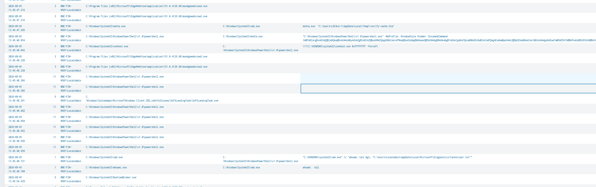
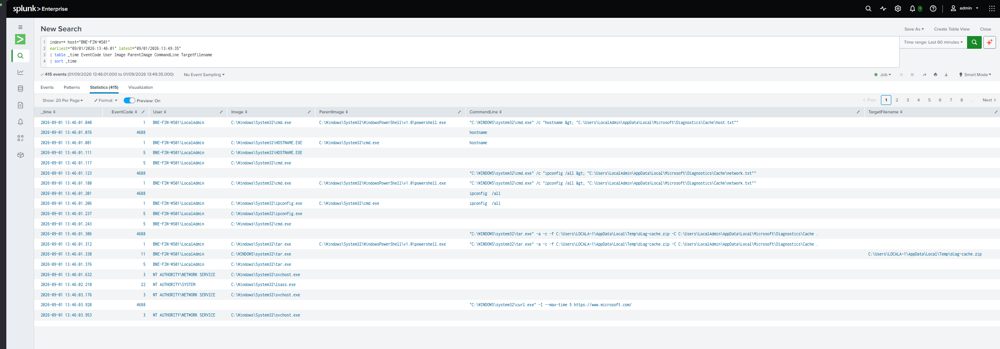
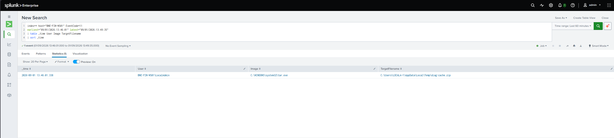
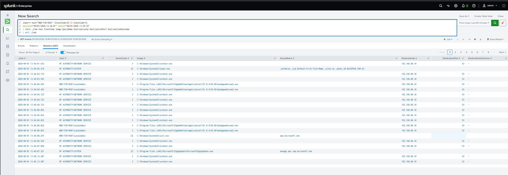

SOC Investigation · BP-003
Suspicious Browser-Data Collection and Staging
Unusual command execution associated with Windows system utilities and file activity.
Executive Summary
BNE-FIN-WS01\LocalAdmin on BNE-FIN-WS01 was reported for unusual command execution. Investigation identified discovery commands gathering user, host and network information, with output redirected into files and subsequently archived into diag-cache.zip.
Further investigation identified mshta.exe spawning hidden PowerShell with an encoded command. Decoding the command revealed the wider activity chain, including user/host/network discovery, staging of browser-profile data, creation of the ZIP archive and an external connectivity check using curl.exe. No evidence was identified confirming that the archive was transferred externally.
Investigation Timeline
cmd.exe launches mshta.exe against an HTA file in the user's Temp directory.
mshta.exe spawns PowerShell using -NoProfile -WindowStyle Hidden -EncodedCommand.
Discovery and collection includes whoami /all, hostname and ipconfig /all, with output staged under Microsoft\Diagnostics\Cache.
tar.exe archives the staged directory into diag-cache.zip in the user's Temp directory.
curl.exe performs an external connectivity-style request to www.microsoft.com. No evidence confirms transfer of the archive.
Key SPL
index=* host="BNE-FIN-WS01"
earliest="09/01/2026:13:46:01" latest="09/01/2026:13:49:35"
| table _time EventCode User Image ParentImage CommandLine TargetFilename
| sort _timeindex=* host="BNE-FIN-WS01" (EventCode=22 OR EventCode=3)
earliest="09/01/2026:13:46:01" latest="09/01/2026:13:49:35"
| table _time User EventCode Image QueryName DestinationIp DestinationPort DestinationHostname
| sort _timeindex=* host="BNE-FIN-WS01" EventCode=11
earliest="09/01/2026:13:46:01" latest="09/01/2026:13:49:35"
| table _time User Image TargetFilename
| sort _timeindex=* host="BNE-FIN-WS01" User="BNE-FIN-WS01\\LocalAdmin"
earliest="09/01/2026:13:43:01" latest="09/01/2026:13:49:35"
| table _time EventCode User Image ParentImage CommandLine TargetFilename
| sort _timeEvidence
01 — Initial Execution Chain
An expanded timeline identified cmd.exe → mshta.exe → hidden encoded PowerShell, establishing an earlier execution chain preceding collection.

02 — Discovery and Staging Timeline
Process telemetry showed discovery commands, output redirection into a staging directory and subsequent archive creation with tar.exe.

03 — Archive Creation
Sysmon Event ID 11 confirmed tar.exe created diag-cache.zip in the user's Temp directory.

04 — Network Review
Network and DNS telemetry was reviewed after archive creation. curl.exe queried www.microsoft.com, but no telemetry confirmed that diag-cache.zip was transferred externally.

Analyst Reasoning
The investigation began with broad file-creation activity. A ZIP archive created by tar.exe provided a high-value pivot into the surrounding host timeline. This exposed discovery commands gathering host and network information and redirecting their output into a staging directory before archive creation.
Network telemetry was reviewed to determine whether activity following the archive indicated possible transfer. A DNS query from curl.exe to Microsoft was identified, but this did not establish exfiltration. Expanding the investigation backward revealed mshta.exe launching hidden encoded PowerShell.
The encoded PowerShell was extracted and decoded for analysis. It showed the coordinated sequence of user, host and network discovery, browser-profile data staging, archive creation and the later connectivity check. Host isolation had already been recommended before the complete encoded activity was understood.
Assessment & Recommended Actions
Assessment: The combined behaviour is highly unusual for the user and business context. Command-line telemetry and the decoded PowerShell demonstrate a coordinated sequence of discovery, browser-data collection, staging and archiving consistent with malicious activity.
Confidence: 95% malicious / 5% benign.
Recommended actions: Immediate host isolation due to the suspicious activity and potential impact to financial systems and data. Continue evidence gathering, including command-line telemetry, the encoded PowerShell, diag-cache.zip, collected/staged files, process relationships and user context. Further investigation should determine the initial execution source and whether any data was transferred externally.
MITRE ATT&CK
No exfiltration technique was mapped because the investigation did not identify evidence confirming external transfer of the archive.
Limitations
Sysmon file-creation telemetry confirmed creation of diag-cache.zip but did not expose the contents of each staged file. Command-line telemetry was therefore used to establish what information was directed into the staging location. The external curl.exe activity did not prove that data was transferred, and no exfiltration claim was made.
Retrospective
I improved my prioritisation in this investigation compared with BP-002. I was quicker at following the strongest evidence and made the decision to recommend host isolation before the full activity chain was understood.
I still got sidetracked at times, particularly when trying to determine exactly what the staged files contained. However, by that point the host had already been recommended for isolation, so the additional investigation did not delay the containment decision.
One area I still need to improve is my familiarity with Windows commands and utilities. There were several commands during the investigation that I had to look up before I could properly interpret them. Improving this knowledge should help me investigate similar activity faster while still verifying anything I'm unsure about.
Detection Improvement
Monitor archive creation in user-writable directories such as Temp and AppData. Increase severity when archive creation is preceded by discovery or data-staging activity, particularly when associated with suspicious execution such as mshta.exe, encoded or hidden PowerShell, or command output being redirected into staging directories.
Correlating these behaviours provides stronger investigative context than alerting independently on every ZIP file, discovery command or PowerShell execution, helping analysts prioritise suspicious collection-and-staging chains earlier.